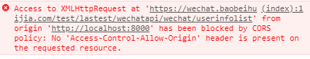

[TOC]
0. 前言
本文基于vue-cli3。
1. 通过api接口获取数据
在vuejs中请求接口，大体分为两种方式：vue-source和axios。它们都是经过良好封装的http请求插件。
下文将简单介绍一下使用方法。
1.1. vue-source
略讲，详情见这篇博客。
1.1.1. 安装
首先，安装该插件：
1 | npm install vue-source --save |
然后，在项目src/main.js中，通过全局方法Vue.use()使用该插件：
1 | import VueSource from 'vue-source' |
1.1.2 使用
在data中定义好接口和接收的数据类型，然后，调用this.$http.get()函数进行get请求即可，代码如下：
1 | data () { |
代码解释：$http.get().then()是get函数请求返回后才调用的函数。then()函数的中两个参数是匿名函数。上述代码使用了ES6新增了箭头函数（即参数指向函数），也可以写成以下形式：
1 | this.$http.get(this.apiUrl).then(function (response) { |
1.2. axios
1.2.1. 安装
1 | npm install axios |
1.2.2. 使用
axios库的主要请求函数有：
1 | axios.request(config) |
config对象的详细属性、请求的后续then()/catch()操作、配置的默认值/defaults等等，见 Axios 中文说明。
（以下纯属个人观点
为了更好地进行模块间的解耦，在vue-cli3构建的项目的src\目录下，创建api\目录，将项目所有需要进行的请求的配置封装到该目录下。
此处示例只封装到一个api.js文件，如下：
1 | // src/api/api.js |
其中，每个函数返回一个调用请求后的对象，相当于设计模式中的工厂方法。
如此封装的好处是，用户使用时，并不需要知道某个请求的请求url和请求方式。
当你需要在其它模块中进行相应的请求时，只需要import导入api.js中相应的函数变量并调用即可，如：
1 | // src/view/main.vue |
1.2.3. 补充
js的请求属于异步操作(不需要等请求完成，函数直接执行结束)。所以，需要通过回调函数来实现请求完成的后续操作。
axios主要利用ES6 Promise来实现异步请求的后续操作。
同时，异步请求会导致请求并行的情况。多个请求之前不能太接近。
2. 跨域问题
2.1. 问题
如果是本机localhost:8000测试，可能会出现跨域问题，打开浏览器会看到如下报错：

2.2. 补充
当两个域具有相同的协议(如http), 相同的端口(如80)，相同的域名如
www.baidu.com，那么我们就可以认为它们是在相同的域中（协议，域名，端口都必须相同）。跨域，就是指协议、域名、端口其中一个或多个不一致的情况下，从当前域去访问另一个域。
出于安全考虑(防止跨域攻击 XSS、CSRF)，浏览器会禁止跨域的请求访问。其实，同源策略是一种约定，它也是浏览器最核心也最基本的安全功能。
2.3. 解决
跨域问题解决有很多方式，主要讲以下三种。
2.3.1. CROS(跨域资源共享)
前端Vue，设置axios允许跨域带cookie(默认不带cookie)，如下：
1 | // axios全局配置，允许跨域带cookie |
后端：
跨域请求后的响应头中需要设置：
Access-Control-Allow-Origin为发起请求的主机地址。Access-Control-Allow-Credentials，当它被设置为true时，允许跨域带cookie，但此时Access-Control-Allow-Origin不能为通配符*。Access-Control-Allow-Headers，设置跨域请求允许的请求头。Access-Control-Allow-Methods，设置跨域请求允许的请求方式。
2.3.2. Vue代理
vue-cli自带代理功能，由node服务器实现。
在项目根目录下新增vue.config.js项目配置文件，然后配置代理：
1 | // 修改配置后一定要 重新npm run serve !!! |
同时需要将请求URL改成以/api开头，如下：
1 | axios.request({ |
设置代理后，本地nodejs服务器会将目标主机的url代理到vue项目的url。
如：
访问http://dev3.airdb.io:8080，会转变成访问http://localhost:8080，再由http://localhost:8080转发请求到http://dev3.airdb.io:8080。
这样，就成了同域请求，浏览器不会进行限制。但实际上，还是请求了目标主机，只是欺骗了浏览器。
由于Vue代理需要利用node服务器，所以只适用于本地npm run serve调试时。
当项目部署到服务器时，可以使用CROS方式、nginx反向代理等方式。
2.3.3. nginx反向代理
只需要在nginx.conf配置文件的vue项目对应的server中，添加：
1 | # 匹配vue项目中所有以/api开头的请求url |
完整示例如下：
1 | server { |